Практичні курси · журнал «ДентАрт» 2017 №1
Застосування діодного лазера 940 μm у пацієнтів з хронічним генералізованим пародонтитом
THE USE OF A DIODE LASER 940 μm IN PATIENTS WITH CHRONIC GENERALIZED PERIODONTITIS
Стоматологія, як і більшість інших медичних спеціальностей, продовжує розвивати мінімально інвазивні види втручань, забезпечуючи комфорт пацієнта, високу ефективність і довготерміновий терапевтичний результат. Один із перспективних напрямків протизапальної нехірургічної терапії пацієнтів з хронічним інфекційним пародонтитом — застосування діодного лазерного випромінювання.
Діодний лазер — це напівпровідниковий лазер, який включає в себе комбінацію галію (Ga), арсеніду (Ar) та інших елементів, таких як алюміній (Al) та індій (In), для перетворення електричної енергії на світлову. Поглинання енергії діодного лазера здійснюється пігментованими хромофорами — гемоглобіном, меланіном. Лазерне випромінювання монохроматичне, когерентне і коліміноване, завдяки чому воно забезпечує точну доставку енергії до цільової зони.
Виробники виготовляють різні типи діодних лазерів, що випускають випромінювання з довжинами хвиль у діапазоні від 805 до 1064 μm. Діодні лазери можуть використовуватися у безперервному або імпульсному режимах, у контакті або без контакту з тканиною. Компактний і портативний дизайн цих лазерних пристроїв робить їх легкими для переміщення. За допомогою діодних лазерів можна ефективно і надійно здійснювати різні процедури на м'яких тканинах порожнини рота, в тому числі і на пародонтальних. Коли енергія діодного лазера взаємодіє з м'якими тканинами, створюється гемостатичний ефект, що дозволяє збільшити точність та акуратність процедури і значно поліпшити візуалізацію місця втручання.
Клінічні дослідження, описані в літературі, вказують на ефективність та прогнозованість використання діодних лазерів у нехірургічній пародонтальній терапії. Однак в Україні досі зберігається скептичне ставлення стоматологів-практиків і відсутній широкий інтерес до застосування лазерних технологій при лікуванні захворювань пародонту. Передусім ця ситуація пояснюється необхідністю створення спеціальних умов праці, а також потребою в додаткових знаннях клініциста в галузі лазерної фізики та основ біологічної взаємодії лазерного випромінювання з тканинами, які зазвичай набуваються під час відповідних атестаційних курсів, і, зрештою, наявністю самого лазерного обладнання. Фахівці з більшою впевненістю надають перевагу традиційним методам протизапального пародонтологічного лікування, які передбачають механічне руйнування під'ясенних зубних відкладень на тлі антисептичної обробки пародонтальних кишень, наприклад, хлоргексидином та пероксидом водню, застосування різних лікарських лікувальних пародонтальних аплікацій і пов'язок, проведення лікарського електрофорезу та ін., призначення місцевих і загальних медикаментозних препаратів, в тому числі й антибіотиків різного спектру дії.
Акцент же міжнародних досліджень демонструє активний розвиток і вдосконалення альтернативних методів лікування при запальних захворюваннях пародонту, що усувають або мінімізують медикаментозний вплив на тканини пародонту і весь організм в цілому.
Етіологія інфекційного пародонтиту, спричиненого штамами пародонтопатогенів, що входять до складу під'ясенної біоплівки, докладно описана в численних дослідженнях Socransky і Haffajee.1 Тривалий вплив бактерій на тканини пародонту призводить до деструктивних змін сполучнотканинних структур, що оточують зуб, і може стати причиною його патологічного розхитування і видалення. В основі протиінфекційної пародонтальної терапії лежать два аспекти — це ретельне видалення мікробних асоціацій з поверхонь пародонтальної кишені і створення оптимальних умов для загоєння пародонтальної рани.
З'ясовано, що механічне та електромеханічне руйнування біоплівки не дозволяє повністю усунути пародонтопатогени, оскільки бактерії можуть зберігатися як у товщі кореневого цементу і в навколишніх м'яких тканинах, так і в дентинних трубочках, що у ряді випадків є причиною рецидиву захворювання. Застосування антибактеріальних препаратів для придушення росту і розвитку пародонтопатогенів має низку побічних несприятливих впливів, часом і незворотних, на організм пацієнта. Зростає кількість міжнародних звітів про бактеріальні штами, які стають усе стійкішими до частих доз антибіотиків, при цьому поширеність грибкової інфекції істотно збільшилася за останні роки і спостерігається тенденція, що це триватиме і в майбутньому.3
Вивчення паразитарних властивостей біоплівки у тканинах пародонту Manor і співавт.4 засвідчило, що біоплівка проникає в епітелій та підлеглу сполучну тканину вздовж ходу капілярів на глибину до 500 мкм. Біоплівка може стимулювати запальні реакції шляхом продукування транссудату, який постачає її живленням.
Тканини, уражені біоплівкою, неспроможні прогресувати від грануляційної стадії, що веде до загоєння, у фазу ремоделювання. І така ділянка тканини стає заповненою біоплівкою хронічною раною, яка без лікування прогресуватиме, утворюючи осередки деструкції і чинячи системний вплив на здоров'я пацієнта.
Діодний лазер відрізняється тим, що не взаємодіє з твердими тканинами зуба, що робить його зручним для проведення різних маніпуляцій на м'яких тканинах, які оточують зуби, і максимально безпечним для твердих. Лазерний вплив одночасно може мати кілька терапевтичних ефектів: фотобактерицидне і фототермічне знезараження стінок пародонтальної кишені, фотобіостимулюючий вплив на процес загоєння, а також дозволяє провести ряд додаткових маніпуляцій: деепітелізацію, дегрануляцію, гінгівектомію, гінгівопластику і френотомію.
Лазерна енергія сприяє ущільненню капілярів та лімфатичних судин, зменшує набряк, що виникає в місці лікування, і в більшості випадків зводить до мінімуму післяопераційний дискомфорт, стимулює загоєння на клітинному рівні. Moritz і співавт.6 у своїх дослідженнях також дійшли висновку, що вплив діодного лазера сприяє загоєнню пародонтальних кишень. Дослідження молекулярно-біологічного аналізу Gojkov-Vukelic і співавт.7 вказують на тривалішу редукцію пародонтопатогенів при додатковому використанні діодного лазерного випромінювання у порівнянні з контрольною групою.
Перераховані вище положення спонукають до вивчення впливу діодного лазера на пародонтальні тканини як допоміжного методу при лікуванні пацієнтів з хронічним генералізованим пародонтитом на тій простій підставі, що традиційна хірургічна пародонтальна терапія обмежується механічним і медикаментозним (хімічним) впливом на тканини пародонту, а додаткове застосування діодних лазерних (фізичних) технологій при лікуванні цієї патології дозволяє розширити спектр впливу на уражені ділянки м'яких тканин, істотно знизити медикаментозне навантаження і створити оптимальні умови для загоєння пародонтальної кишені.
Незважаючи на численні переваги діодного лазерного випромінювання, лікар також повинен враховувати і недоліки застосування лазерних діодних апаратів, наприклад, такі, як формування вираженого фібринозного коагулянту, який, з одного боку, відіграє роль захисної біологічної пов'язки, але з другого, може зумовлювати відстрочку при загоєнні, викликану «заварюванням» кровоносних і лімфатичних судин з наступною потребою реваскуляризації при загоєнні. Клініцист, що має досвід роботи з лазерами, диференціює такий процес загоєння від розвитку пародонтальної інфекції в рані.
Випадки збільшення болючості з 4 по 7 день після лазерної маніпуляції успішно купіруються уживанням мінімальної дози пероральних анальгетиків (наприклад, ібупрофену). Перед лазерною процедурою слід обговорювати з пацієнтами клінічні прояви та очікуваний дискомфорт після лазерної корекції, щоб уникнути помилок чи передбачуваних ускладнень.
Навколо досліджень, що підтверджують користь лазерних технологій у пародонтології, не вщухають дискусії і контрверсії, як у публікаціях Christopher і співавт.8 та Sgolastra і співавт.,9 які вказують на незначне поліпшення показників рівня клінічного прикріплення при додатковому застосуванні діодного лазера у ході лікування хронічного генералізованого пародонтиту, а отже, на мінімальну ефективність при лікуванні цієї патології.
При цьому багаторічні погляди міжнародних дослідників у галузі застосування діодних лазерів у пародонтології виправдовують застосування лазерного впливу на всіх етапах терапії пацієнтів з хронічними формами пародонтиту. Наприклад, доставка лазерної енергії за допомогою оптоволокна у зубоясенний простір може застосовуватися як додатковий спосіб при попередньому знезаражуванні (деконтамінації) перед різними видами маніпуляцій, таких як скейлінг, зондування тощо. В активній фазі протизапальної пародонтальної терапії, поряд з механічним руйнуванням біоплівки з поверхні зуба, лазерна обробка, з одного боку, спрямована на глибоку деконтамінацію стінок пародонтальної кишені, а з другого — на ущільнення капілярів та лімфатичних судин шляхом коагуляції.
У фазі реконструктивного лікування можливе проведення додаткових процедур, таких як контурна пластика тканин ясен функціонального і естетичного призначення, френектомія та ін. Призначення лазерної енергії в ході підтримувальної пародонтальної терапії доповнює традиційну механічну обробку стінок пародонтальної кишені шляхом фотобактерицидного і фототермічного її руйнування і чинить безпосередній сприятливий вплив на загоєння хронічної пародонтальної рани.
Таким чином, незважаючи на змінну ефективність традиційної протиінфекційної пародонтальної терапії за різними результатами в дослідженнях, зберігається міжнародний інтерес до розвитку та вдосконалення альтернативних методів лікування захворювань пародонту, що усувають або мінімізують медикаментозний вплив. Проблема залишається актуальною. Детальне вивчення терапевтичних протоколів, що визначають дозу випромінювання (потужність, діаметр світловода, режим, тривалість дії тощо), дозволяє пролити світло на безпеку та клінічну ефективність лазерних технологій у пародонтології.
Клінічний приклад
Подаємо клінічне спостереження пацієнтки І. 50 років з діагнозом хронічний генералізований пародонтит, яка звернулася за спеціалізованою пародонтологічною допомогою зі скаргами на біль і кровоточивість ясен, підвищену чутливість зубів на холодне, незадовільний естетичний вигляд ясен, дискомфорт, пов'язаний з рухливістю фронтальних зубів, труднощі при відкушуванні і пережовуванні твердої їжі, неприємний запах з рота і страх втратити зуби. Зі слів пацієнтки, симптоми вперше з'явилися близько п'яти років тому і мали тенденцію до періодичного посилення. За цей час багато разів робилося професійне видалення зубних відкладень, яке приносило короткочасне зниження дискомфорту. Із загальносоматичних захворювань виявлено порушення функції щитовидної залози. Не курить. При зовнішньому огляді конфігурація обличчя, шкіра і видимі слизові без патологічних змін. Регіонарні лімфатичні вузли не збільшені.
Об'єктивно визначається набряк, альвеолярна гіперемія і дифузний маргінальний ціаноз слизової оболонки верхніх і нижньої щелеп (фото 1 а, б, в). При пальпації альвеолярної частини ясен визначаються виділення серозно-гнійного ексудату з більшості пародонтальних кишень, патологічна рухливість фронтальних зубів верхніх і нижньої щелеп.

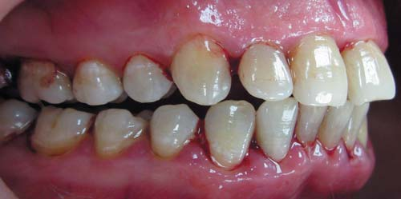
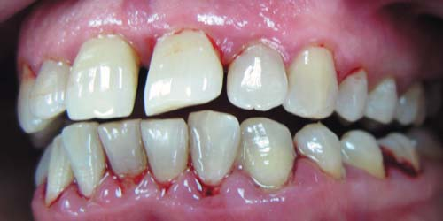
Фото 1 а, б, в. Пацієнтка І. Наявність виражених візуальних ознак запалення ясен при первинному огляді (10/2013).
При панорамному рентгенографічному обстеженні верхніх і нижньої щелеп визначається генералізована нерівномірна деструкція альвеолярних відростків (фото 2). Вихідні параметри зубного нальоту, кровоточивості, глибини пародонтальних кишень, рівень рецесії, ступінь рухливості зубів та ураження зон фуркації відображені на пародонтальній карті (рис. 1). У ході обстеження встановлено сприятливий прогноз для всіх зубів.
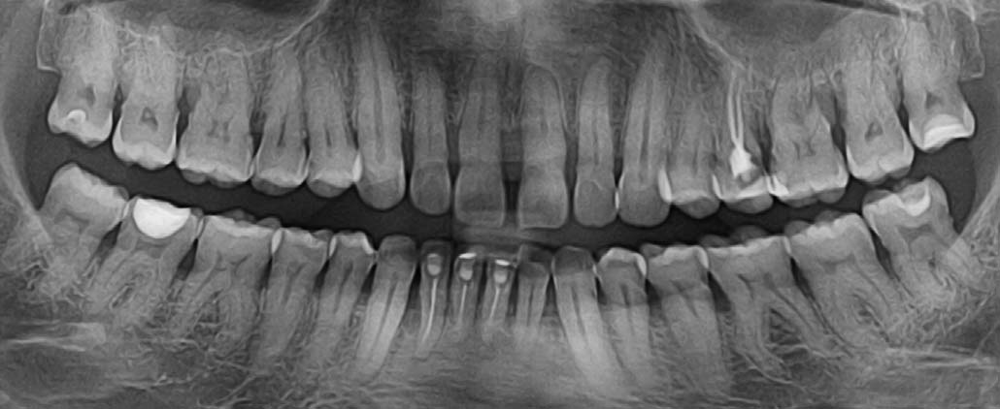
Фото 2. Ортопантомограма пацієнтки І. Визначається генералізована нерівномірна кісткова деструкція альвеолярного відростка верхніх та нижньої щелеп.
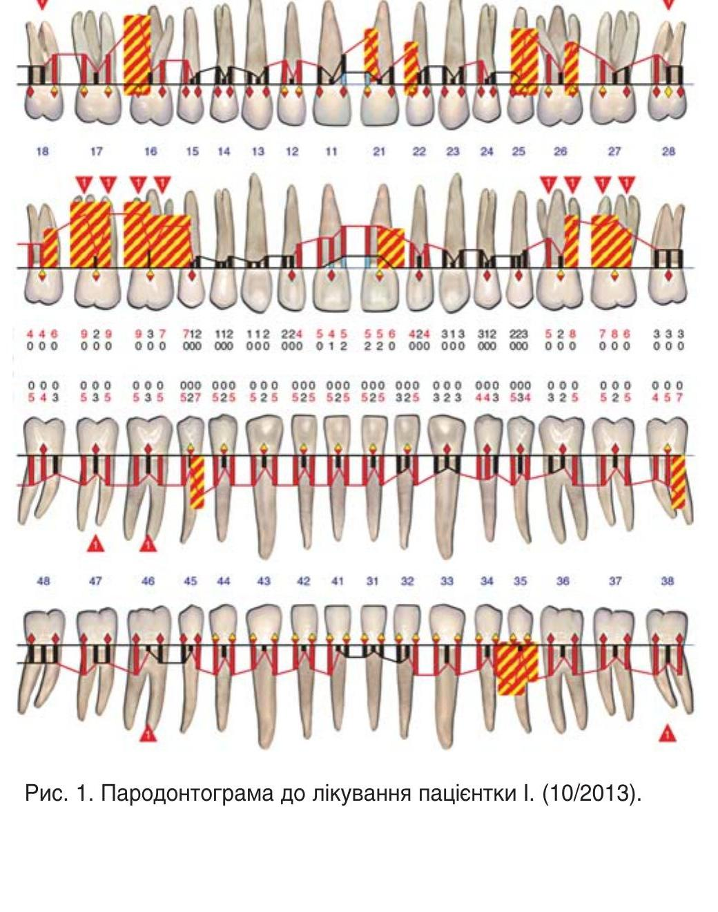
Рис. 1. Пародонтограма до лікування пацієнтки І. (10/2013).
Перед плануванням лікувальних заходів провадилася професійна гігієна ротової порожнини і навчання індивідуальній гігієні. Етапи лікування, засновані на этіопатогенетичному, комплексному та персоналізованому принципах, складалися з трьох основних фаз: перша — активна протизапальна, друга — реконструктивна, третя — підтримувальна. Метою лікування було усунення місцевих несприятливих факторів, що впливають на розвиток дистрофічно-запальних процесів у тканинах пародонту, створення умов для максимальної редукції пародонтальних кишень та досягнення стійкої ремісії.
Активна протизапальна пародонтальна терапія передбачала традиційне ретельне видалення зубних відкладень. Перед механічним очищенням додатково провадили лазерну іррадіацію ясен з використанням індій-галій-алюміній-фосфатного діодного лазера (940 μм, неініційований світловод Ø 300 μм, 0,5 W/CW, 10 сек на одну поверхню), а по закінченні під'ясенного скейлінгу і згладжування поверхні кореня зуба — лазерну коагуляцію м'яких тканин пародонтальної кишені та деепітелізацію маргінальної частини ясен (940 μм, ініційований світловод Ø 300 μм, 1W/CW, 15 сек на одну поверхню) (фото 3 а, б, в).
Підтримувальна пародонтальна терапія здійснювалася через 6 тижнів, 3, 6 і 12 місяців на підставі оновлених даних пародонтальної карти і повторювала початковий протокол лікування.
Протокол підтримувальної пародонтальної терапії включав лазерну іррадіацію ясен (940 μм, неініційований світловод Ø 300 μм, 1W/CW, 10 сек на одну поверхню) перед електромеханічним видаленням зубних відкладень, а після під'ясенного скейлінгу і згладжування поверхні кореня зуба робили лазерну коагуляцію м'яких тканин пародонтальної кишені та деепітелізацію маргінальної частини ясен (940 μм, ініційований світловод Ø 300 μм, 2W/CW, 15 сек на одну поверхню) (фото 4 а, б, в).
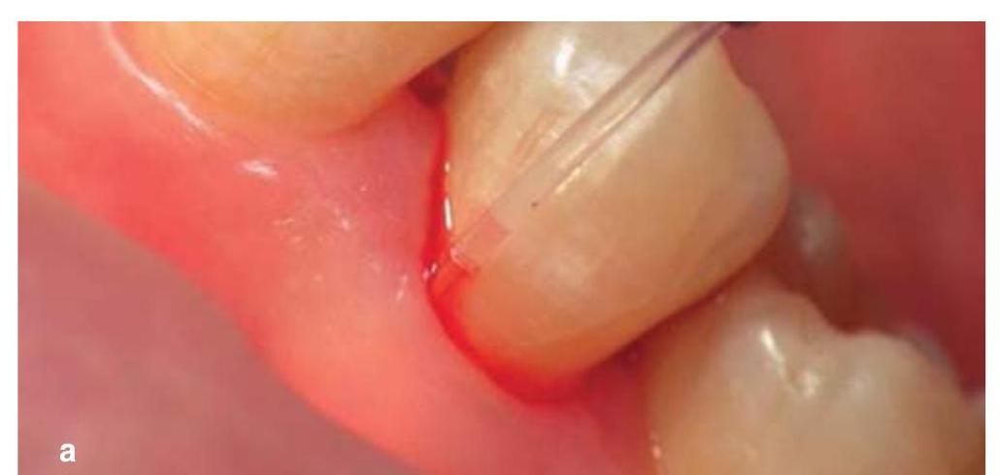
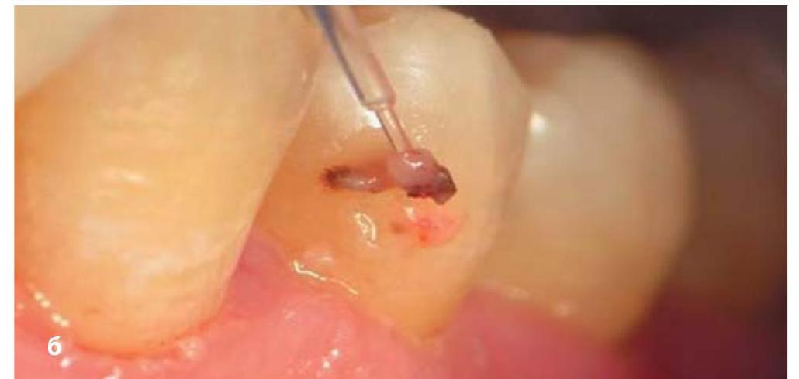
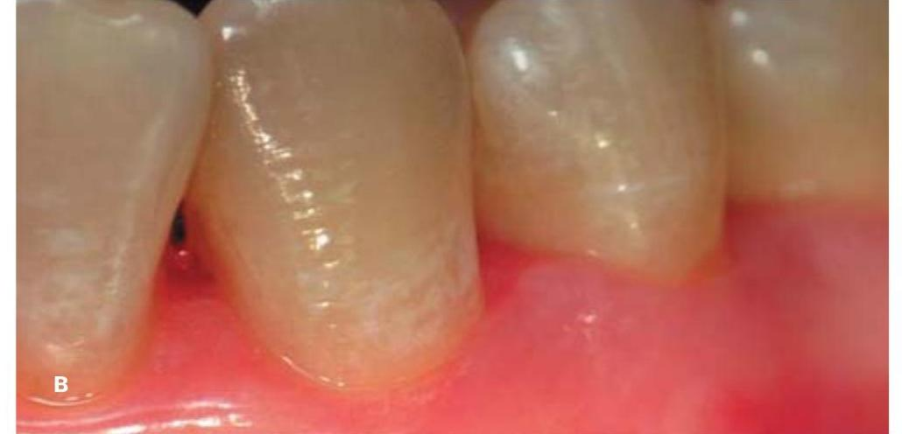
Фото 3 а, б, в. Клінічний приклад етапу лазерної обробки — коагуляція м'яких тканин пародонтальної кишені та деепітелізація маргінальної частини ясен у зоні премолярів нижньої щелепи ліворуч.
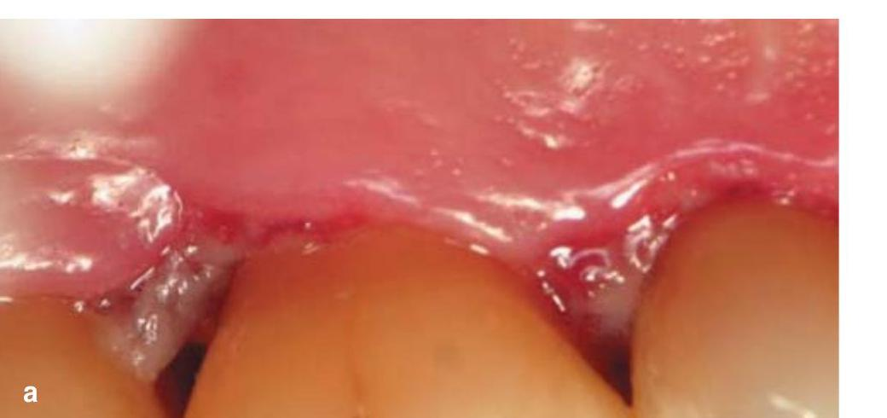
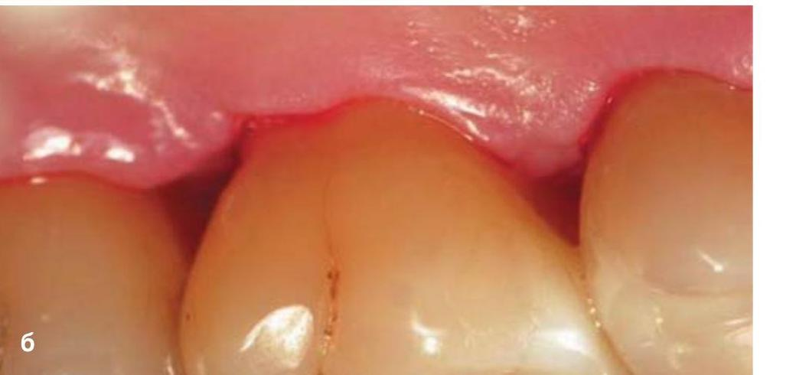
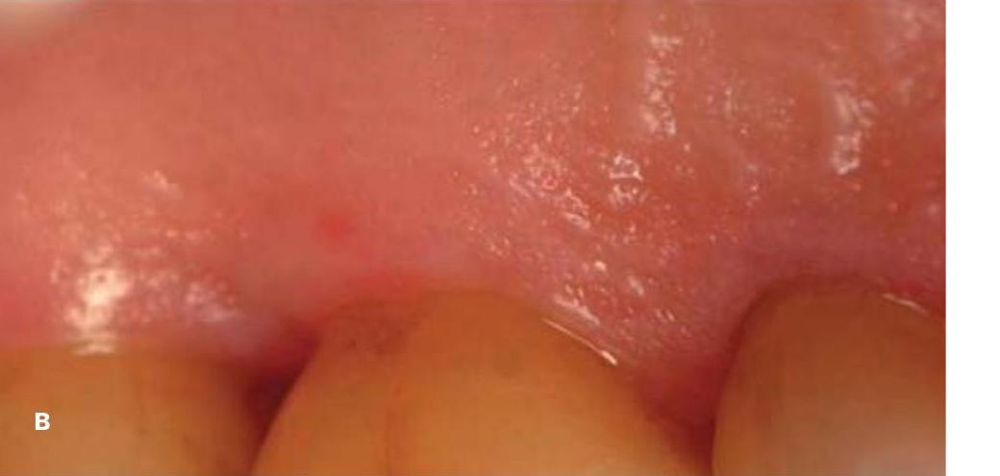
Фото 4 а, б, в. Клінічний приклад етапу лазерної обробки — коагуляція м'яких тканин пародонтальної кишені та деепітелізація маргінальної частини ясен у зоні молярів верхньої правої щелепи.
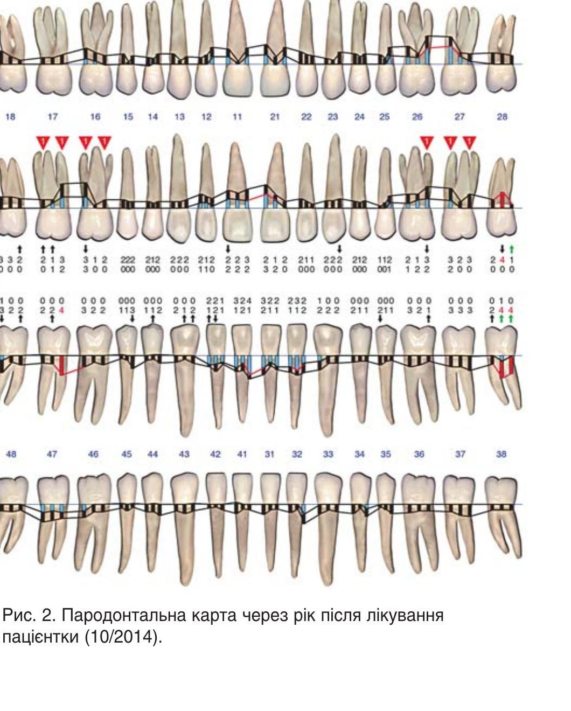
Рис. 2. Пародонтальна карта через рік після лікування пацієнтки (10/2014).
Результати лікування через 12 місяців подано на пародонтограмі (рис. 2), ортопантомограмі (фото 5) та клінічних фотографіях (фото 6). Динаміка зміни основних клінічних параметрів, таких як глибина пародонтальних кишень (ПК) 3,5 мм, індекс кровоточивості BOP (Ainamo, Bay, 1975), подано на графіку (рис. 3). Профілактичні заходи передбачали стандартні рекомендації з догляду за ротовою порожниною, які застерігають від додаткових подразників обробленої пародонтальної рани.
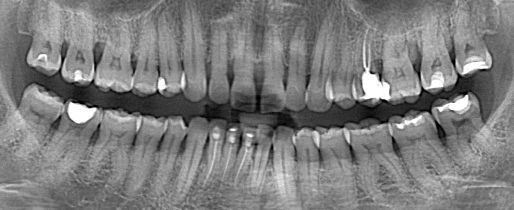
Фото 5. Ортопантомограма пацієнтки І., діагноз — хронічний генералізований пародонтит середнього ступеня тяжкості, стадія ремісії. Стан кісткової тканини через рік після лікування (10/2014).
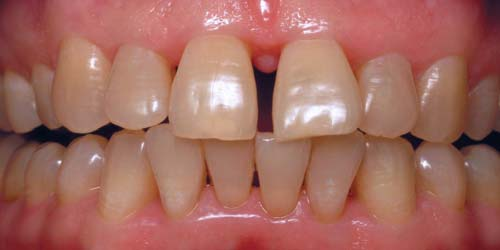
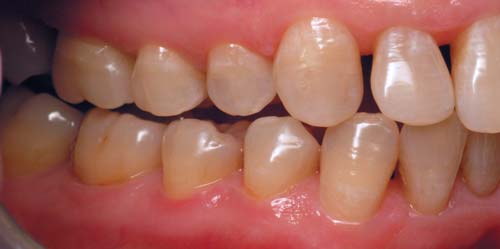
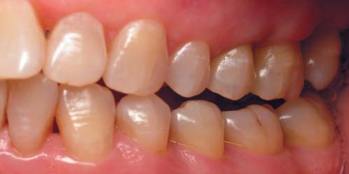
Фото 6 а, б, в. Клінічні фото стану ясен у прямій і бічних проекціях через рік після початку лікування (10/2014). Візуально спостерігається відсутність ознак запалення слизової оболонки, ясна щільно охоплюють шийки зубів.
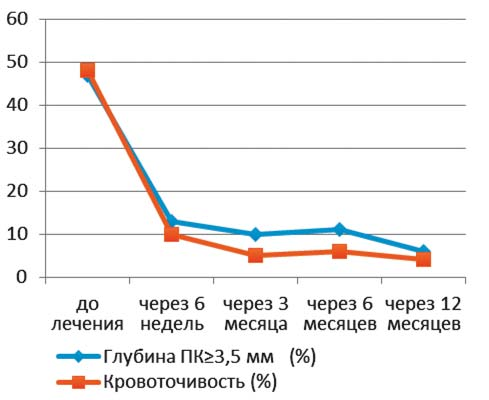
Рис. 3. Графік відображає динаміку індексу кровоточивості та глибини пародонтальних кишень у ході лікування пацієнтки.
Висновки
Літературні дані вказують на те, що переваги лазерної терапії як додаткового методу підтверджуються безпосереднім руйнівним впливом на бактерії, а також ущільненням стінки пародонтальної кишені, що чинить опосередкований вплив на подальший ступінь сприйнятливості м'яких тканин до несприятливих місцевих чинників.
Застосування діодного лазера 940 μм у ході комплексної терапії пацієнтів з хронічним генералізованим пародонтитом середнього ступеня тяжкості — клінічно виправданий, доцільний та ефективний допоміжний метод лікування, і можна вважати, що додаткове використання діодного лазерного випромінювання в межах відповідних параметрів забезпечує м'яку, але глибоку деконтамінацію на ділянці-мішені, вказуючи на можливість зниження медикаментозного навантаження на пацієнта, сприяє стимулюванню та підтримці процесів загоєння пародонтальної рани, досягненню стійкішої ремісії і дозволяє більшою мірою скоротити обсяг хірургічних втручань у порівнянні з традиційним методом лікування. Подальше вивчення застосування діодного лазера за цього виду патології дозволить оцінити ефективність в аналогічних випадках.
Розуміння механізму впливу і дотримання техніки безпеки при застосуванні лазерної енергії забезпечує вищий стандарт медичної допомоги в терапії інфікованого пародонту. Але доки не будуть досягнуті вищий суспільно-соціальний рівень і ступінь освіченості населення в питаннях, пов'язаних з причинами виникнення пародонтиту, поширеність хвороб пародонту матиме тенденцію до збільшення.
Література
- Socransky SS, Haffajee AD (2002). Dental biofilms: difficult therapeutic targets. Periodontol 2000 28:12–55.
- Lindhe J, Nyman S (1985). Scaling and granulation tissue removal in periodontal therapy. J Clin Periodontol 12(5):374–388.
- Zaura E, Brandt BW, Teixeira de Mattos MJ (2015). Same exposure but two radically different responses to antibiotics: resilience of the salivary microbiome versus long-term microbial shifts in feces. MBio 10;6(6):e01693-15.
- Manor A, Lebendiger M, Shiffer A, Tovel H (1984). Bacterial invasion of periodontal tissues in advanced periodontitis in humans, J Periodontol 55(10)567-573.
- Aoki A, Sasaki KM, Watanabe H, Ishikawa I (2004). Lasers in nonsurgical periodontal therapy. Periodontol 2000 36:59–97.
- Moritz A, Gutknecht N, Doertbudak O (1997). Bacterial reduction in periodontal pockets through irradiation with a diode laser: a pilot study. J Clin Laser Med Surg 15:33-37.
- Gojkov-Vukelic M, Hadzic S, Dedic A, Konjhodzic R, Beslagic E (2013). Application of a diode laser in the reduction of targeted periodontal pathogens. Acta Inform Med 21(4):237-40.
- Christopher J. Smiley, Sharon L. Tracy, Bryan S. Michalowicz (2015). Systematic review and meta-analysis on the nonsurgical treatment of chronic periodontitis by means of scaling and root planing with or without adjuncts. J Am Dent Assoc 146(7):525-535.
- Sgolastra F., Severino M, Gatto R., Monaco A. (2013). Effectiveness of diode laser as adjunctive therapy to scaling root planning in the treatment of chronic periodontitis: a meta-analysis. Lasers Med Sci 28(5):1393-402.
- Lee MK, Ide M, Coward PY, Wilson RF (2008). Effect of ultrasonic debridement using a chlorhexidine irrigant on circulating levels of lipopolysaccharides and interleukin-6, J Clin Periodont 35(5):415-419.
- Tomasi C, Leyland AH, Wennström JL (2007). Factors influencing the outcome of nonsurgical periodontal treatment: a multilevel approach. J Clin Periodontol 34: 682–690.